Я леший — в хорошем смысле слова. Живу в лесу, слушаю его и веду этот сайт с любовью к деревьям и к своему делу.
Днем здесь шумно от птиц и людей. А ночью — только шорох листвы, крик совы и лунный свет, в котором рождаются самые честные кадры.
Двенадцать лет я хожу по одним и тем же тропам — и каждый раз вижу их впервые. Лес не позирует. Он живёт своей жизнью, а я лишь свидетель.
Мой кабинет — это мох, кора и утренний туман. Мой рабочий день начинается за час до рассвета и заканчивается, когда последний луч уходит за стволы.
лет в лесу
рассветов в год
случайных кадров
Здесь нет спешки. Только свет, тень и терпение. Если вы это чувствуете — нам по пути.
Когда последний грибник уходит домой, начинается моя смена. Луна — мой единственный софтбокс, а глаза сов — лучшие модели.
Я научился ходить без фонаря. Слушаю, как трещат ветки под лапами лис, и жду, когда туман поднимется над болотом.
ночей в чаще
терпения
луна
Если вы не боитесь темноты и умеете слушать — добро пожаловать в мой ночной лес.
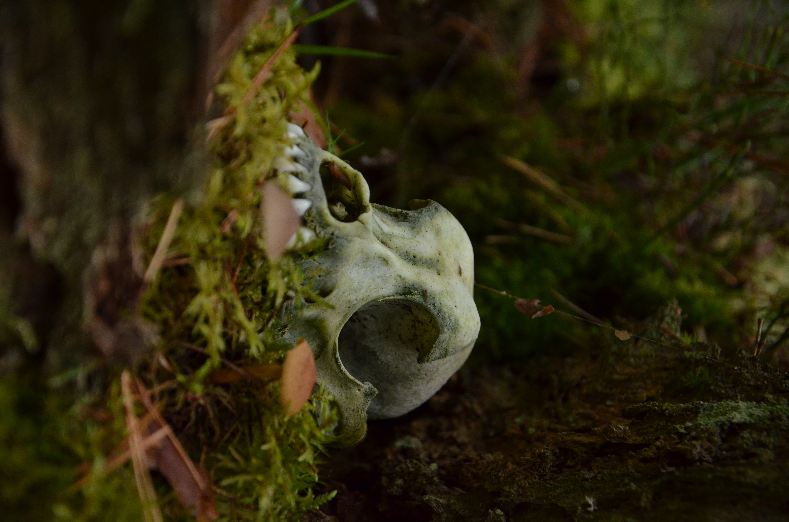
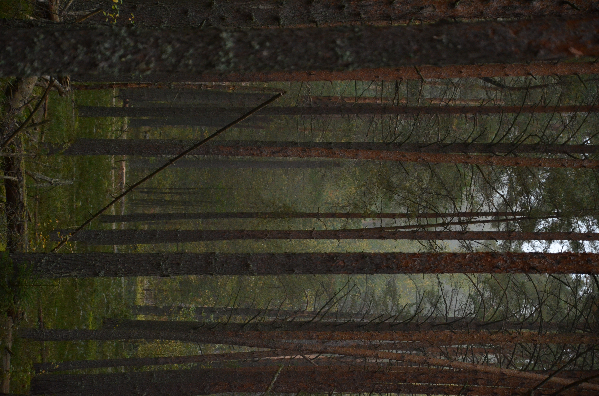
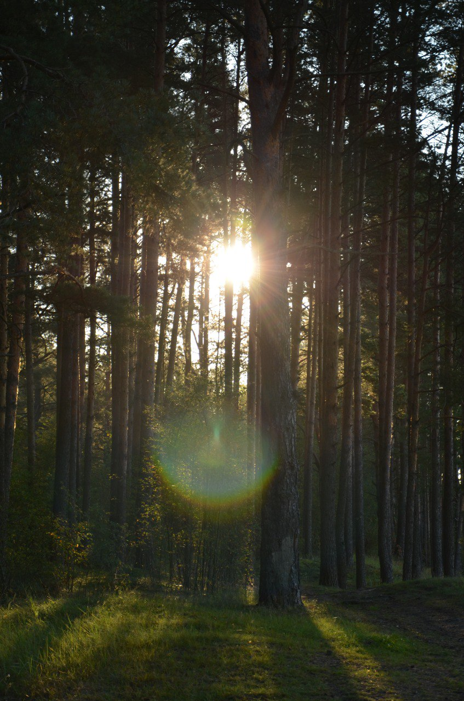
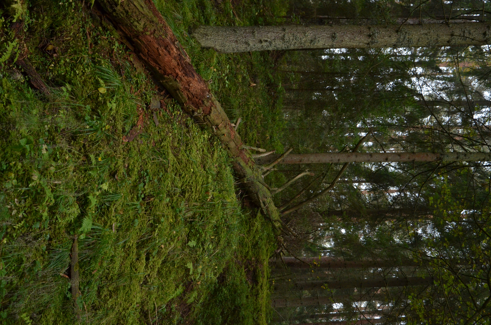
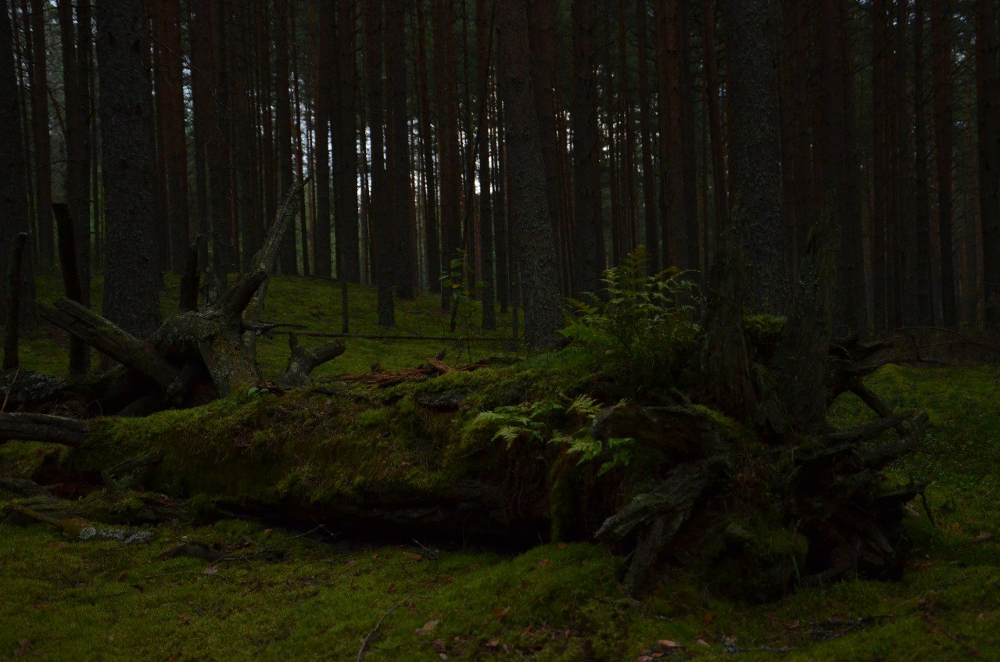
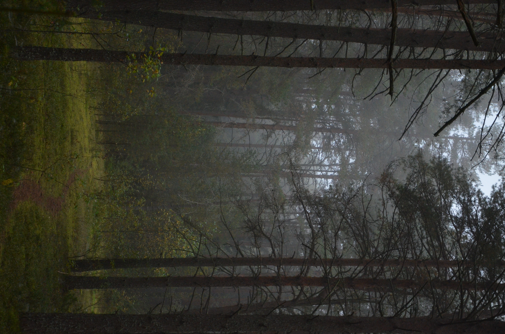
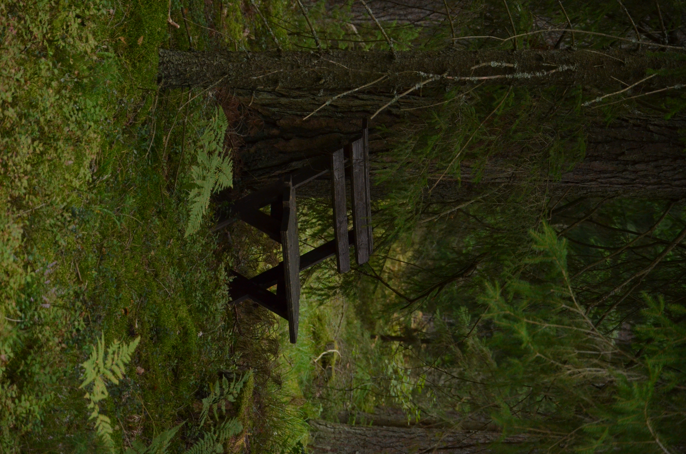
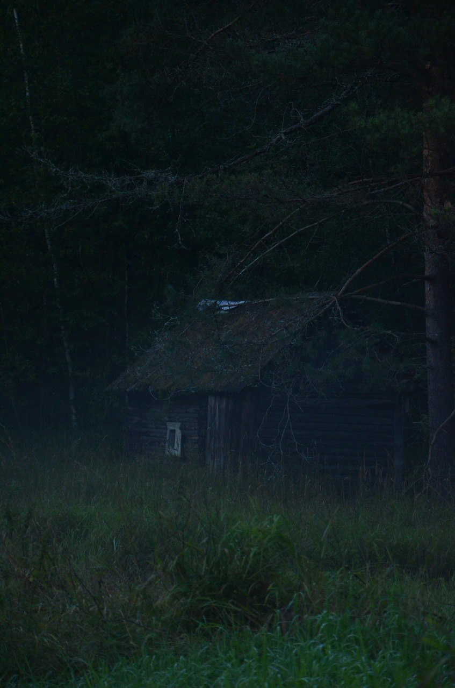
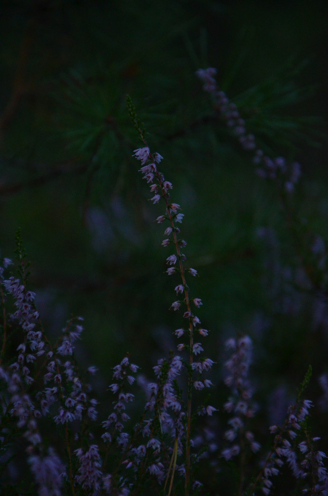
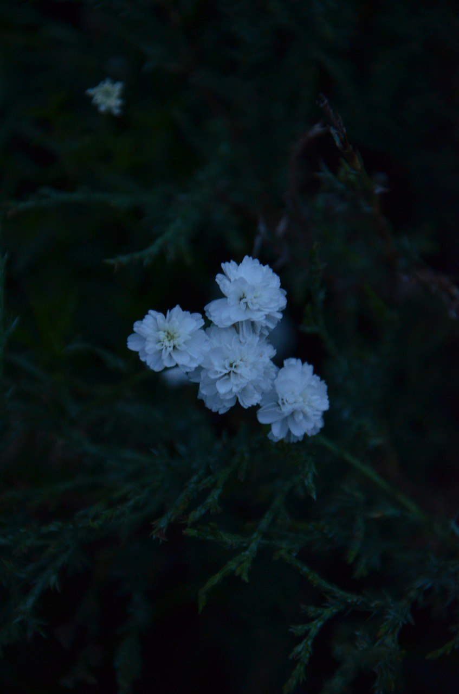
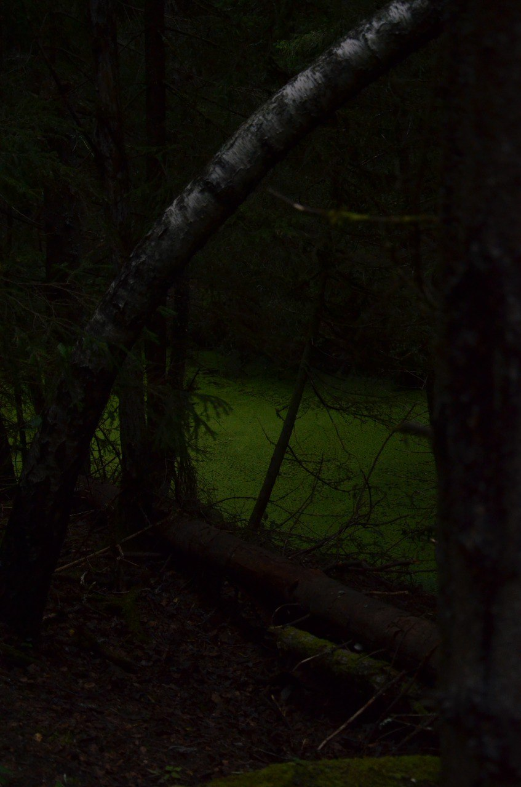
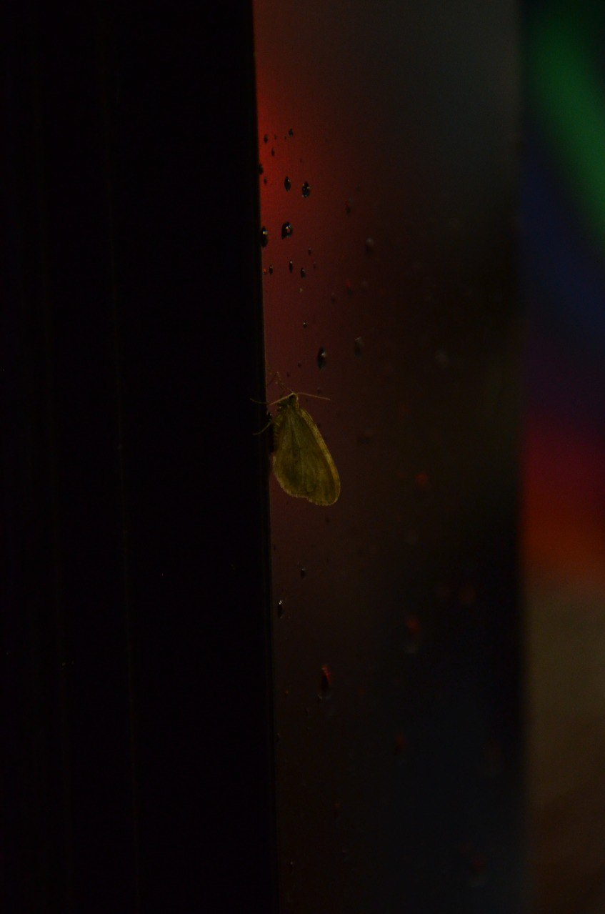
Самый мягкий и нежный свет. Лес просыпается, туман стелется по земле, а лучи пробиваются сквозь ветви, создавая волшебные лучи.
Луны не видно. Самые темные ночи в году. Идеальное время для съемки звездного неба сквозь кроны и для долгих выдержек.
Пришел на точку за час до рассвета. Туман такой густой, что не видно собственных ботинок. Сижу на поваленном дереве, пью чай из термоса. Комар пытался украсть мой бутерброд. Мы не договорились.
Сегодня нашел идеальный кадр, но понял, что оставил карту памяти в машине. Полчаса медитации на тему «зачем я вообще сюда пришел». Зато услышал, как дятел выбивает свой ритм. Вернусь завтра, с картой и без спешки.
Решил пойти туда, где нет троп. Нашел заросли мха, похожие на зеленое одеяло. Лег, посмотрел в небо сквозь кроны. Кажется, я слышал, как растет папоротник. Или это просто белка надо мной издевалась.
Вышел на звук, думал — сова. Оказалось, это два ежа делят яблоко. Устроили настоящий спарринг. Снял их на память. Теперь у меня есть эксклюзивные кадры лесных разборок.
Луна скрылась за тучами. Стою по колено в воде, жду, когда туман поднимется над мхом. Слышал, как кто-то большой прошел в кустах. Надеюсь, это лось. Или леший. Мы с ним теперь коллеги.
Приехал на точку, а аккумулятор сел. Сижу в полной темноте, слушаю, как кричит сова. Без вспышки, без фонаря. Только я и лес. Впервые за долгое время почувствовал себя не фотографом, а частью леса.
Шел по следам лисы. Она вывела меня на поляну, где растут светящиеся грибы. Снял их при свете луны. Кажется, я начал понимать язык ночного леса. Или просто не выспался.
Ночью в лесу нет тишины. Трещат ветки, шуршит листва, где-то ухает филин. Поймал в кадр летучую мышь. Она была не в восторге, но позировала.
«Лес не нуждается в том, чтобы его показывали. Он нуждается в том, чтобы его услышали. Я всего лишь перевожу его тишину на язык света».— из полевого дневника
Здесь только избранное. Туман, мох, случайные ежи и то, что не вошло в галерею. Подписывайтесь, чтобы дышать лесом каждый день.
Перейти в каналТверь и леса вокруг
hello@forestlight.ru
@pbtgftgk